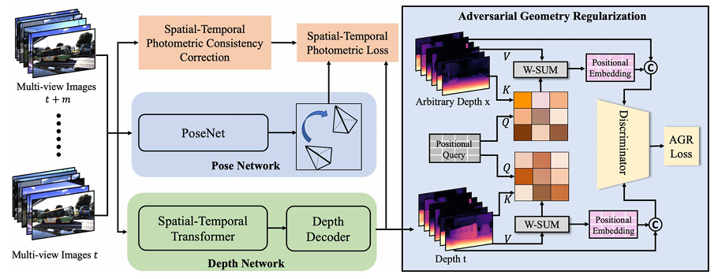

Xiaoshuai Hao
I am a Ph.D. candidate in the Department of Computer Science at the National University of Singapore, advised by Prof. Wei Tsang Ooi, Prof. Benoit Cottereau, and Dr. Lai Xing Ng. I also collaborate closely with Prof. Ziwei Liu from Nanyang Technological University, Singapore.
My research focuses on developing 3D scene understanding systems that are robust, scalable, and generalizable in real-world conditions.
I have been fortunate to collaborate with Apple Machine Learning Research, NVIDIA Research, ByteDance Seed, ByteDance AI Lab, OpenMMLab, MMLab@NTU, and Motional.
I am the recipient of the National Scholarship (Ministry of Education, 2019), NUS Research Achievement Award (NUS Computing, 2023), and Dean's Graduate Research Excellence Award (NUS Computing, 2024),
🦁 I am open to discussion and collaboration in 3D scene perception, generation, and understanding. If you find our research backgrounds a potential match, feel free to email me.
News
- [02/2025] - We are hosting The RoboSense Challenge.
- [02/2025] - DynamicCity was selected as a spotlight at ICLR 2025.
- [01/2025] - Calib3D was selected for oral presentation at WACV 2025.
- [09/2024] - Place3D was selected as a spotlight at NeurIPS 2024.
- [04/2024] - OpenESS was selected as a highlight at CVPR 2024.
- [11/2023] - We are hosting The RoboDrive Challenge at ICRA 2024.
- [09/2023] - Seal was selected as a spotlight at NeurIPS 2023.
- [03/2023] - LaserMix was selected as a highlight at CVPR 2023.
Industrial Experience
|
|
NVIDIA Research |
|
Shanghai AI Laboratory |
|
|
ByteDance AI Lab |
|
OpenMMLab |
|
|
Motional |
Recent Publications
* equal contributions ‡ project lead § corresponding author
|
RoboBrain: A Unified Brain Model for Robotic Manipulation from Abstract to Concrete |

|
KALAHash: Knowledge-Anchored Low-Resource Adaptation for Deep Hashing |

|
TASAR: TRANSFER-BASED ATTACK ON SKELETAL ACTION RECOGNITION |

|
AS-GCL: Asymmetric Spectral Augmentation on Graph Contrastive Learning |

|
MapFusion: A novel BEV feature fusion network for multi-modal map construction
Information Fusion, 2025
|
|  |
DynamicCity: Large-Scale Occupancy Generation from Dynamic Scenes
Applied Intelligence,
2025
|

|
Is Your HD MapConstructor Reliable under Sensor Corruptions? |
|
MapDistill: Boosting Efficient Camera-based HD Map Construction via Camera-LiDAR Fusion Model Distillation |
|
FTF-ER: Feature-Topology Fusion-Based Experience Replay Method for Continual Graph Learning
ACM Multimedia (MM), 2024
|
|
MBFusion: A New Multi-modal BEV Feature Fusion Method for HD Map Construction |

|
CUSTOMIZED TREATMENT PER PIXEL FOR BLIND IMAGE SUPER-RESOLUTION |
|
Enhancing 3D Hand Pose Estimation via Dense Ordinal Regression Network |
|
ESC-MISR: Enhancing Spatial Correlations for Multi-Image Super-Resolution in Remote Sensing |

|
Dual Alignment Unsupervised Domain Adaptation for Video-Text Retrieval |
|
Uncertainty-Aware Alignment Network for Cross-Domain Video-Text Retrieval |
|
MixGen: A NewMulti-Modal Data Augmentation |

|
Multi-Feature Graph Attention Network for Cross-Modal Video-Text Retrieval |

|
WHAT MATTERS: ATTENTIVE AND RELATIONAL FEATURE AGGREGATION NETWORK FOR VIDEO-TEXT RETRIEVAL |
Unpublished Manuscript
* equal contributions ‡ project lead § corresponding author
|
|
WHAT MATTERS: ATTENTIVE AND RELATIONAL FEATURE AGGREGATION NETWORK FOR VIDEO-TEXT RETRIEVAL |
Tech Reports

|
The RoboDrive Challenge: Drive Anytime Anywhere in Any Condition
Technical Report, 2024
|

|
The RoboDepth Challenge: Methods and Advancements Towards Robust Depth Estimation
Technical Report, 2023
|
Workshop Organizers
Academic Services
Conference Reviewer
- IEEE/CVF Conference on Computer Vision and Pattern Recognition (CVPR)
- IEEE/CVF International Conference on Computer Vision (ICCV)
- European Conference on Computer Vision (ECCV)
- Conference on Neural Information Processing Systems (NeurIPS)
- International Conference on Learning Representations (ICLR)
- International Conference on Machine Learning (ICML)
- IEEE International Conference on Robotics and Automation (ICRA)
- IEEE/RSJ International Conference on Intelligent Robots and Systems (IROS)
Journal Reviewer
- International Journal of Computer Vision (IJCV)
- IEEE Transactions on Pattern Analysis and Machine Intelligence (TPAMI)
- IEEE Transactions on Neural Networks and Learning Systems (TNNLS)
- IEEE Transactions on Intelligent Vehicles (TIV)
- IEEE Transactions on Circuits and Systems for Video Technology (TCSVT)
- IEEE Transactions on Multimedia (TMM)
- IEEE Transactions on Knowledge and Data Engineering (TKDE)
- IEEE Robotics and Automation Letters (RA-L)
- ISPRS Journal of Photogrammetry and Remote Sensing (P&RS)